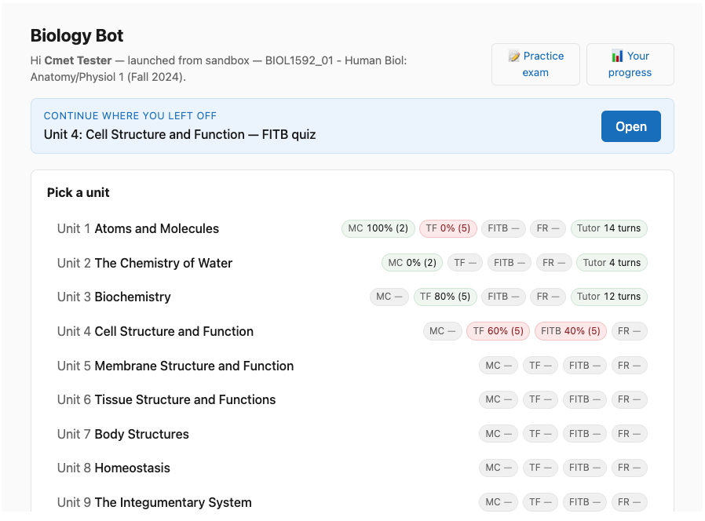
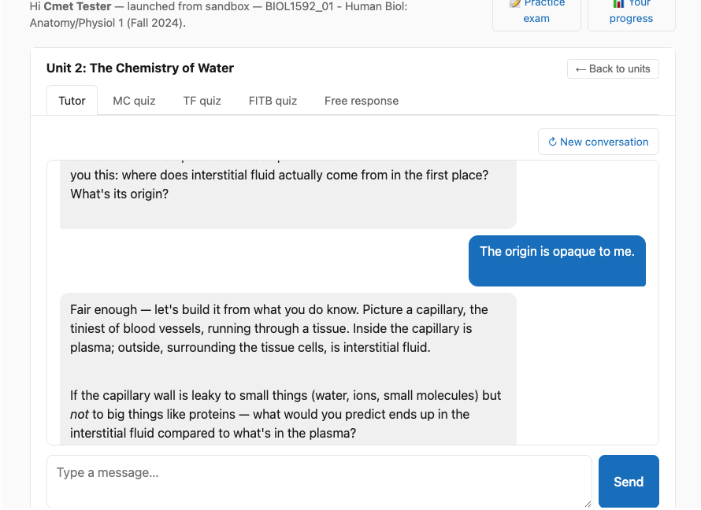
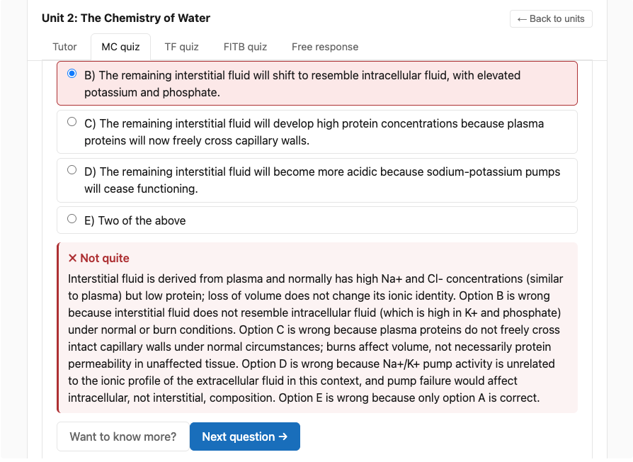
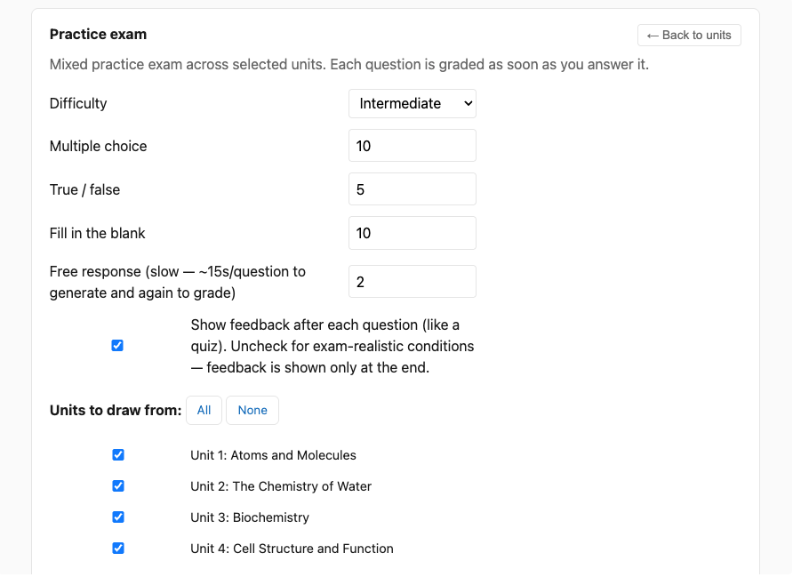
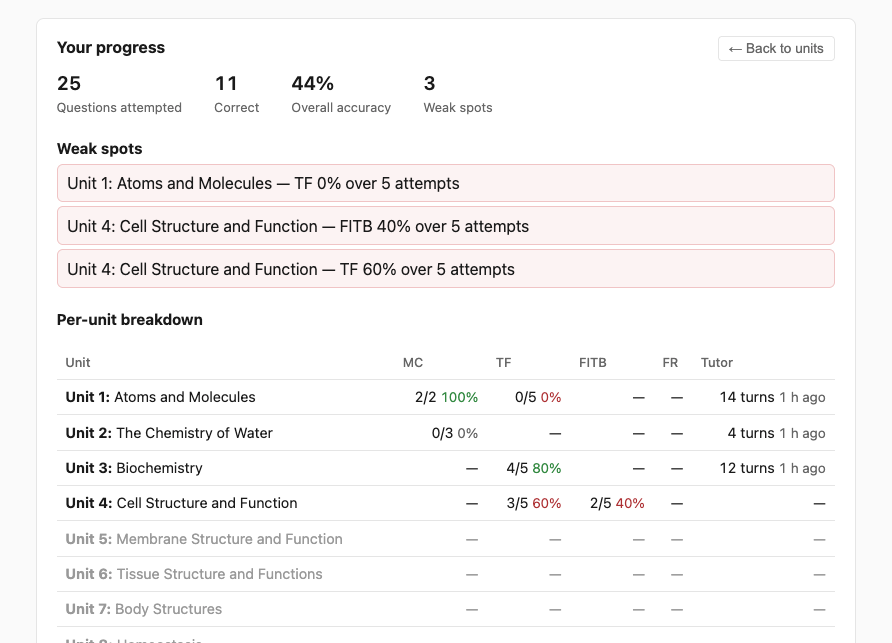
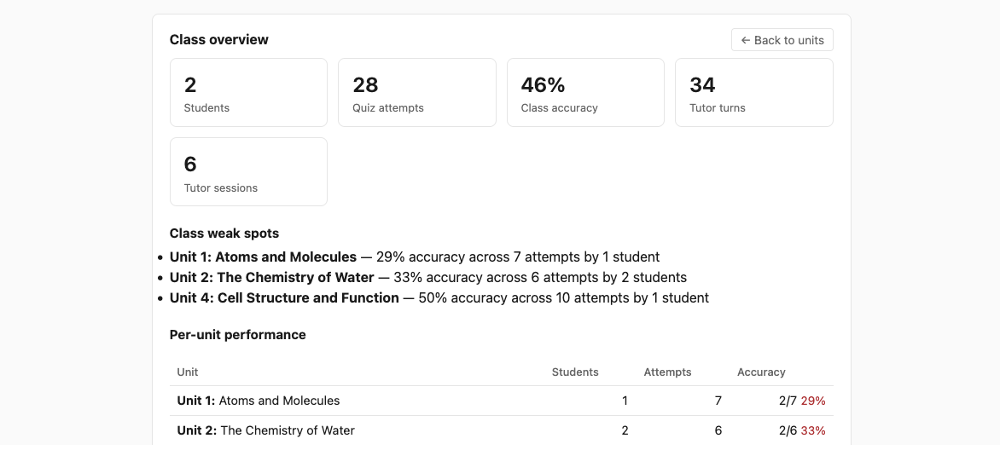
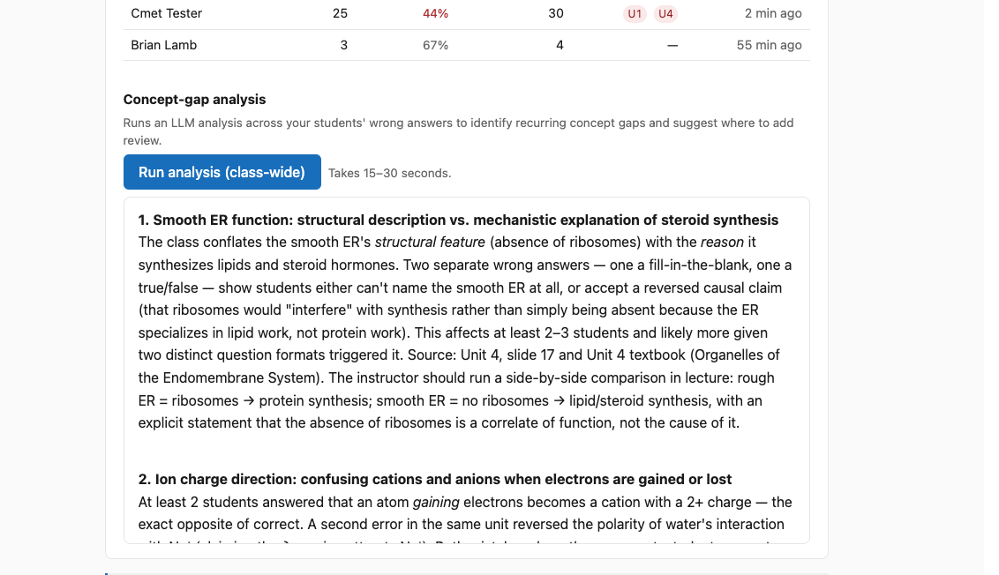

For students 👩🎓
Getting in
- Open your Moodle course in the usual way.
- Click the "Biology Bot" activity wherever your instructor has placed it. The tool will open inside Moodle.
- You'll see a list of units. Click any unit to start working.

What each tab does
Once you're inside a unit, you'll see five tabs across the top:
- 💬 Tutor
- A Socratic chat — the tutor asks questions rather than lecturing. Type what you're trying to understand, and it'll probe your thinking. Click "↻ New conversation" anytime to clear context and start fresh.
- ✅ MC quiz
- Multiple choice with five options, ranging from introductory to advanced difficulty. After each answer, you'll see why the right answer is right and why the wrong ones were tempting.
- 🔘 TF quiz
- True / false statements with explanations of why — particularly important for the false ones.
- 📝 FITB quiz
- Fill in the blank. Drawn from your unit's terms list. Don't worry about plural vs singular or hyphen vs no-hyphen — those variations are accepted.
- ✍️ Free response
- Longer-answer questions worth several marks each. The AI grades against a rubric and tells you what you got right, what was missing, and what wasn't needed — followed by a model answer.


While you're answering
- "Want to know more?" button on any result gives a deeper plain-English walkthrough with citations to specific slides or textbook sections.
- "Discuss with tutor" at the end of a quiz drops your wrong answers into the Tutor tab as conversation context — the tutor will probe the specific concepts you missed.
- Pattern synthesis shows up at the end of each quiz: a short summary of what you're solid on and what to revisit, with concrete next steps.
Practice exam mode
- Click 📝 Practice exam in the top-right header.
- Choose how many of each question type (MC, TF, FITB, free-response), pick difficulty, and pick which units to draw from.
- Two output paths:
- Generate exam (online) — take the exam interactively in the browser. Optional toggle to hide feedback during (exam-realistic mode).
- 📄 Generate printable — produces a print-friendly page. Use your browser's "Print / save as PDF" to get a paper version. Toggle to include or exclude the answer key.

Tracking your progress
Click 📊 Your progress in the header. You'll see your overall accuracy, units you're weak on, and a per-unit-per-kind breakdown. Each unit in the picker also shows small badges with your accuracy so far.
The picker also shows a "Continue where you left off" card when you've used the tool before — one click resumes the unit and activity you were last using.

For instructors 👩🏫
Adding Biology Bot to a course
- Confirm the tool is registered with your Moodle. If "Biology Bot" already appears as a preconfigured tool when you go to Add an activity or resource, skip to step 3. If not, your Moodle admin needs to register it once site-wide using dynamic registration with URL
https://moodle-biology-bot-production.up.railway.app/register. - If the tool is registered but not appearing in the activity chooser, an admin needs to edit it under Site administration → Plugins → External tool → Manage tools and set Tool configuration usage to "Show in activity chooser and as a preconfigured tool".
- In your course, turn editing on, then Add an activity or resource → Biology Bot. Save.
- That's it. Enrolled students will see and use it. Your launch (as instructor) shows you a different view than students see.
What the instructor dashboard shows
When you launch Biology Bot as an instructor (anyone with the Instructor, Administrator, or Teaching Assistant role in the course), you'll see a 👩🏫 Instructor view button in the header alongside the student-facing options. Clicking it opens the class dashboard.
Sections of the dashboard
Class totals
Headline cards: how many students have used the tool, how many quiz attempts, class-wide accuracy, total tutor turns, tutor sessions. A first-glance pulse check on engagement.
Class weak spots
Lists the units where the class as a whole is under 70% accuracy across at least 4 attempts. Sorted worst-first. Use this to flag content that may need a re-explanation in lecture.
Per-unit performance
For every unit: how many students have engaged, total attempts, class accuracy. Helps spot units that are either consistently easy or consistently hard, vs. units no one is touching.

Roster
One row per student in the course: total attempts, accuracy, tutor turn count, flagged weak units, and time since last seen. Click any student to drill into their per-unit-per-kind breakdown — same view they see for themselves.
Concept-gap analysis (AI-generated)
Click Run analysis (class-wide). Takes 15–30 seconds. The AI samples the wrong answers across all your students and writes a short summary of recurring concept gaps, with citations to specific slides or textbook sections, plus suggested instructor actions ("re-explain in lecture", "share a worked example", "direct students to the textbook section on X").
This is most useful after a meaningful amount of student activity has accumulated. Empty courses produce empty analyses.

What Biology Bot knows about 📚
The AI's responses, questions, and grading are grounded in the instructor's actual course materials — not the model's general knowledge of biology. Specifically:
| Source | How it's used |
|---|---|
| Lecture PPTs 17 unit decks, slides + speaker notes |
Primary grounding for tutor dialogue, question generation, and citations. The bot references "Unit N, slide M" when pointing students to a source. |
| Course terms list Per-unit key terms |
Drives fill-in-the-blank questions and informs vocabulary the tutor expects students to know per unit. |
| Example exam Worked exam with answer key |
Style anchor — generated questions match the instructor's voice and difficulty calibration. |
| Open textbooks TRU Pressbooks A&P I & II, CC BY 4.0 |
Matched chapter per unit. Cited as "(Unit N textbook)" when the bot points students to the textbook. |
All source-material grounding is loaded once at deploy time. To update, the instructor shares new files and the operator re-runs the ingestion pipeline.
Behind the scenes
Biology Bot is an LTI 1.3 tool — the same standard Moodle uses to embed other external activities. Built in TypeScript on Node, with Postgres for student / session / progress data and Anthropic Claude for the AI calls. Source on GitHub: github.com/blamb/moodle-biology-bot.
Built by Brian Lamb at Thompson Rivers University, in collaboration with the BIOL 1592 / 1692 instructor. Borrows prompt patterns from the earlier open-margins project. Grounding includes the open A&P I and A&P II Pressbooks textbooks (Thompson Rivers University, CC BY 4.0).